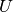
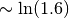

Thermodynamics of the insulator Dimer lattice¶
Close to the coexistence region the Energy of the system is calculated.
from math import log, ceil
import numpy as np
from scipy.integrate import simps
import matplotlib.pyplot as plt
import dmft.dimer as dimer
import dmft.common as gf
from dmft.utils import differential_weight
def loop_beta(u_int, tp, betarange, seed):
avgH = []
for beta in betarange:
tau, w_n = gf.tau_wn_setup(
dict(BETA=beta, N_MATSUBARA=max(2**ceil(log(8 * beta) / log(2)), 256)))
giw_d, giw_o = dimer.gf_met(w_n, 0., 0., 0.5, 0.)
if seed == 'I':
giw_d, giw_o = 1 / (1j * w_n - 4j / w_n), np.zeros_like(w_n) + 0j
giw_d, giw_o, _ = dimer.ipt_dmft_loop(
beta, u_int, tp, giw_d, giw_o, tau, w_n, 1e-6)
ekin = dimer.ekin(giw_d[:int(8 * beta)], giw_o[:int(8 * beta)],
w_n[:int(8 * beta)], tp, beta)
epot = dimer.epot(giw_d[:int(8 * beta)], w_n[:int(8 * beta)],
beta, u_int ** 2 / 4 + tp**2 + 0.25, ekin, u_int)
avgH.append(ekin + epot)
return np.array(avgH)
fac = np.arctan(25 * np.sqrt(3) / 0.4)
temp = np.tan(np.linspace(5e-3, fac, 195)) * 0.4 / np.sqrt(3)
BETARANGE = 1 / temp
U_int = [3.4, 3.7, 4.7, 5.2]
TP = 0.3
avgH = [loop_beta(u_int, TP, BETARANGE, 'I') for u_int in U_int]
Internal Energy¶
The internal energy decreases and upon cooling but in the insulator it finds two energy plateaus
plt.figure()
temp_cut = sum(temp < 3)
for u, sol in zip(U_int, avgH):
plt.plot(temp[:temp_cut], sol[:temp_cut], label='U={}'.format(u))
plt.xlim(0, 2.5)
plt.title('Internal Energy')
plt.xlabel('$T/D$')
plt.ylabel(r'$\langle H \rangle$')
plt.legend(loc=0)
Specific Heat¶
In the heat capacity it is very noticeable how close one is to the Quantum Critical Point as the Heat capacity is almost diverging for the smallest  insulator
plt.figure()
CV = [differential_weight(H) / differential_weight(temp) for H in avgH]
for u, cv, h in zip(U_int, CV, avgH):
plt.plot(temp[: temp_cut], cv[: temp_cut], lw=1, label='U={}'.format(u))
plt.xlim(-0.1, 2.)
plt.ylim(-0.1, 5)
plt.title('Internal Energy')
plt.title('Heat Capacity')
plt.xlabel('$T/D$')
plt.ylabel(r'$C_V$')
plt.legend(loc=0)
Entropy¶
Entropy again find two plateaus as first evidenced by the internal energy, it is also noteworthy that entropy seems to remain finite for this insulator and would seem that is the same value for all cases being numerical uncertainties to blame for the curves not matching at zero temperature. It still remains unknown what the finite entropy value corresponds to. In this particula case is 
ENDS = []
for cv in CV:
cv_temp = np.clip(cv, 0, 1) / temp
s_t = np.array([simps(cv_temp[i:], temp[i:], even='last')
for i in range(len(temp))])
#cv_t_dt = cv_temp * differential_weight(temp)
#s_t = np.array([sum(cv_t_dt[:i + 1]) for i in range(len(temp))])[::-1]
ENDS.append(log(16.) - s_t)
plt.figure()
for u, s in zip(U_int, ENDS):
plt.plot(temp[: temp_cut], s[: temp_cut], label='U={}'.format(u))
plt.title('Entropy')
plt.xlabel('$T/D$')
plt.ylabel(r'$S$')
plt.legend(loc=0)
plt.xlim(-0.01, 0.9)
plt.yticks([0, log(2), log(2) * 2, log(2) * 4],
[0, r'$\ln 2$', r'$2\ln 2$', r'$4\ln 2$'])
plt.show()
Total running time of the script: ( 0 minutes 11.322 seconds)